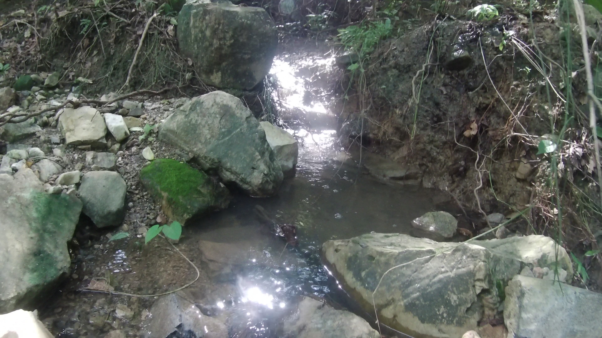
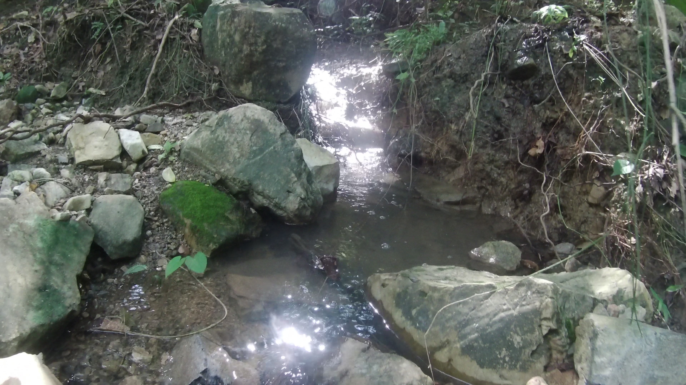
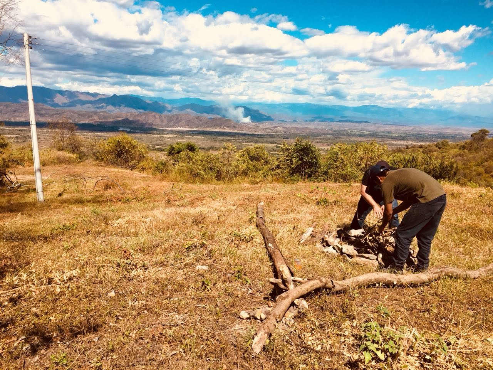
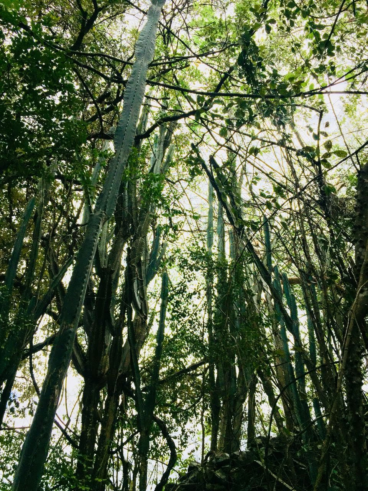
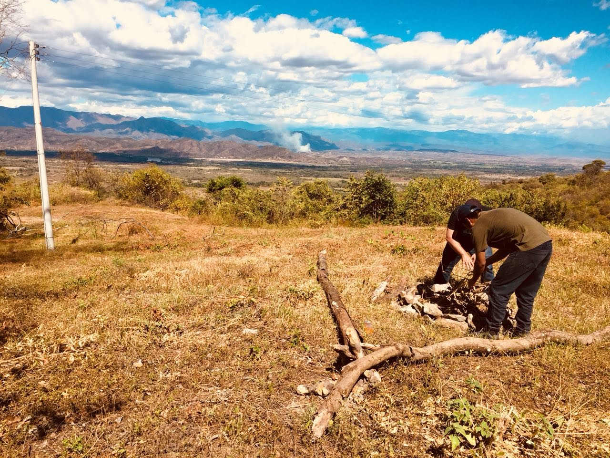
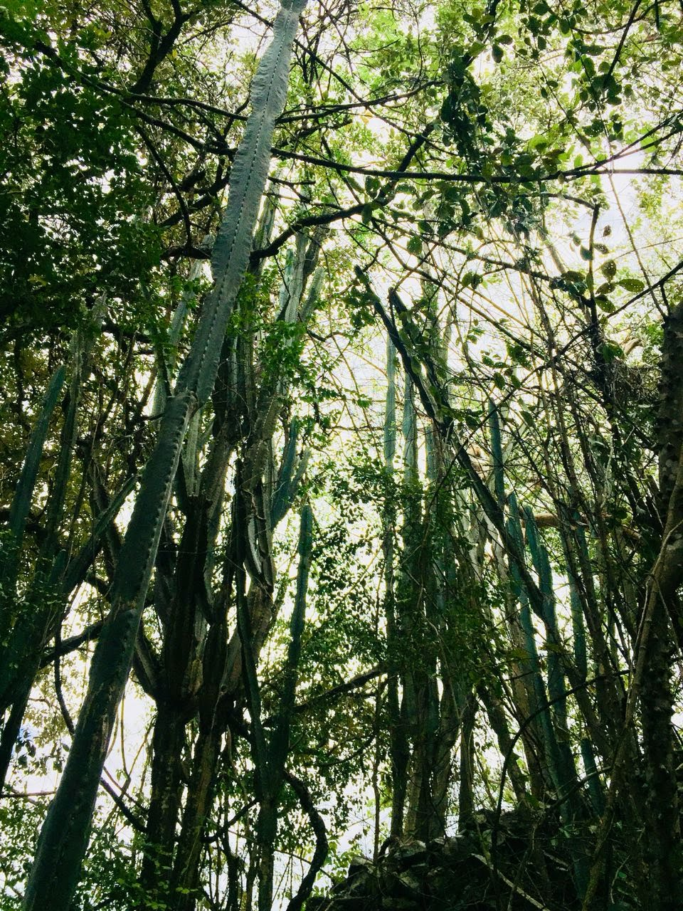
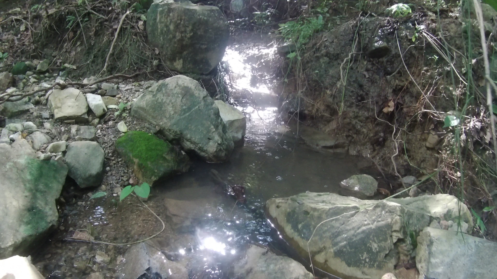
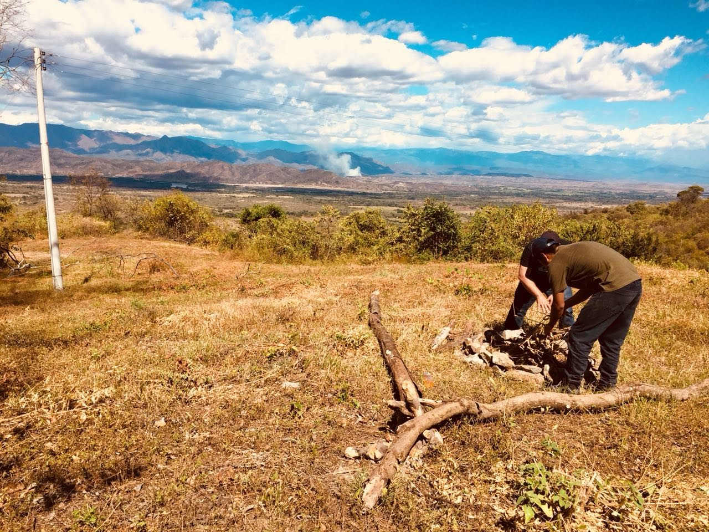
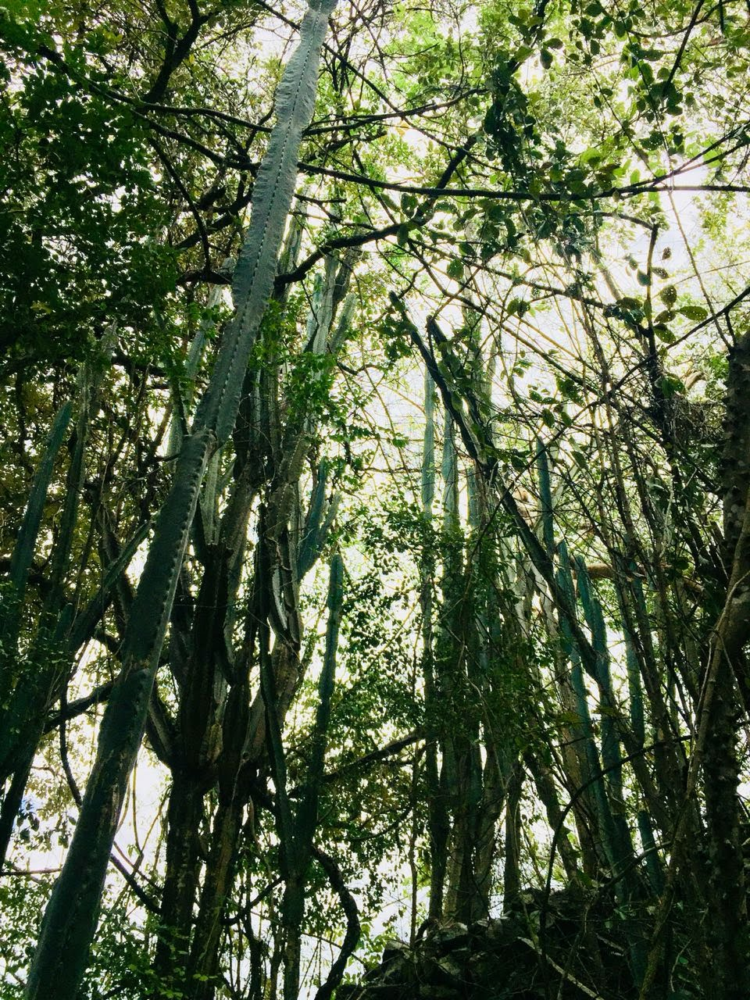

Galeria
 


 



Un sueño por descubrir, una nueva aventura por vivir
Somos una empresa líder en el sector turístico comprometida con la promoción y el desarrollo del turismo sostenible. Nuestro enfoque se centra en proporcionar servicios de consultoría especializados para proyectos turísticos que buscan preservar y proteger los recursos naturales y culturales de cada destino, al tiempo que promueven el crecimiento económico y el bienestar de las comunidades locales. Contamos con un equipo de expertos altamente capacitados en áreas como gestión ambiental, conservación de la biodiversidad, turismo comunitario y responsabilidad social corporativa. Nuestra misión es asesorar a nuestros clientes para que sus proyectos turísticos se desarrollen de manera sostenible, generando beneficios tanto para el medio ambiente como para las generaciones futuras, al tiempo que ofrecen experiencias únicas y enriquecedoras a los visitantes. Trabajamos en estrecha colaboración con gobiernos, organizaciones no gubernamentales y empresas del sector para impulsar una transformación positiva en la industria turística, creando un equilibrio entre el crecimiento económico, la conservación de los recursos y el respeto a las comunidades locales.


